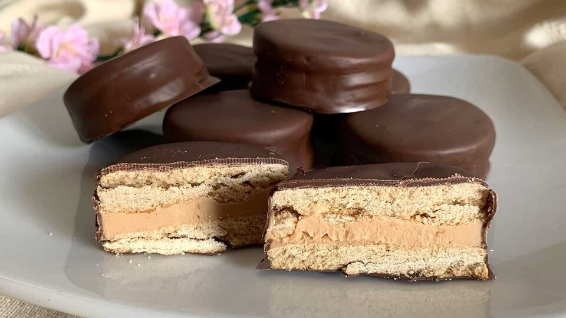

El alfajor Dubai es una experiencia gourmet pensada para los paladares más exigentes. Una silueta elegante bañada en chocolate semiamargo de alto brillo, con un corte preciso que revela su arquitectura interna. Dos capas de biscuit delicadamente horneado enmarcan un corazón de dulce de leche premium, cremoso y profundo, con notas de caramelo tostado. El baño de chocolate, de textura sedosa y acabado espejo, envuelve cada unidad como si fuera una pieza de alta relojería. Perfecto para regalar o para darse un gusto sin culpa, Dubai redefine lo que significa indulgencia.
